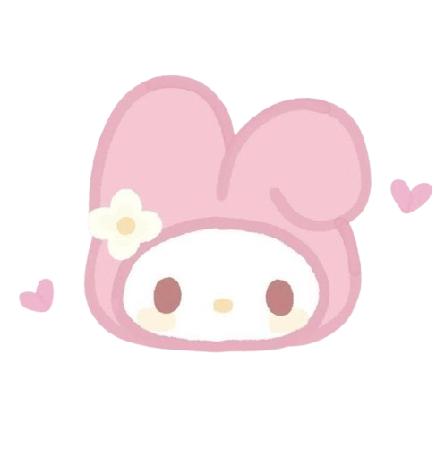
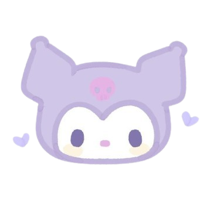

While the majority of her official character profiles call her "Hello Kitty" or just "Kitty", her real name is Kitty White, and she was born in the suburbs of London, England on November 1st. Her height is described as five apples and her weight as three apples. She is portrayed as a cute, bright, sweet, kind-hearted and tomboyish girl who can do anything she sets her mind to. She has many friends such as My Melody and she is very close to her slightly younger identical twin sister Mimmy. Kitty is good at baking although she claims that she is an awful chef in the Hello Kitty and Friends episode "The Wonderful Sisters".

My Melody's younger brother Rhythm can be a little bit of a rascal, but she loves him dearly. Her mama enjoys doing crafts and loves baking cookies with her. Her gentle, strong papa must be where she gets her kind disposition. Her treasured hood was made just for her by her very knowledgeable grandma, while her grandpa loves adventures! She is best friends with Flat, a blue mouse who is a bit shy, and she is typically very friendly towards her rival Kuromi. My Melody's best friend is My Sweet Piano, a pink sheep who is soft, kind and girly.
Kuromi is a character from the My Melody universe. She is My Melody's rival and doppelgänger, and manifests as a white rabbit or imp-like creature wearing a black jester's hat with a pink skull on the front and a black devil's tail. The skull's facial expression on her forehead changes to match Kuromi's mood. Fittingly, her birthday is on Halloween. Kuromi's name translates from Japanese to English as "black beauty". Her mother and father wears a very similar outfit as herself.
